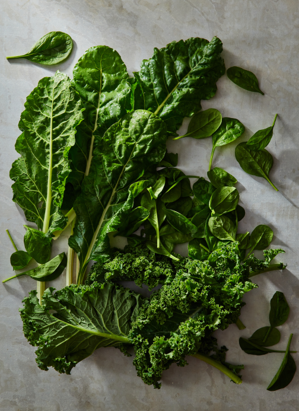
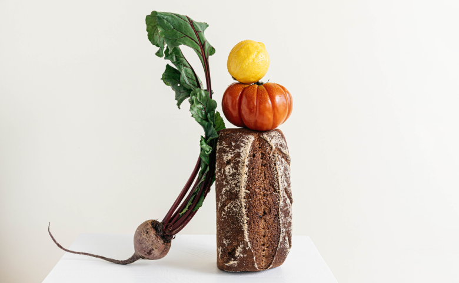

We’re farmers, purveyors, and eaters of organically grown food.
Browse our shop


Central California — The person who grew these was located in Central California and, er, hopefully very well-compensated.